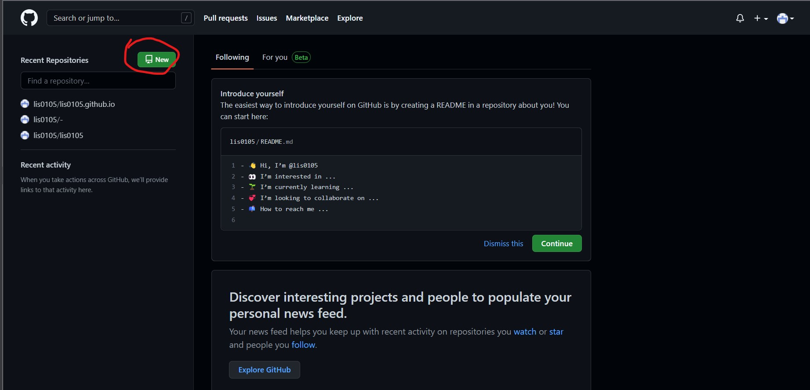
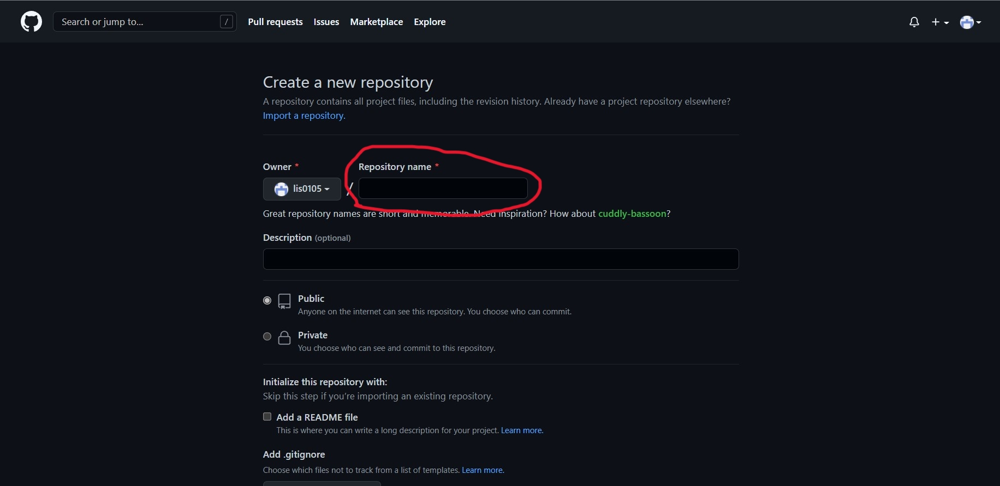
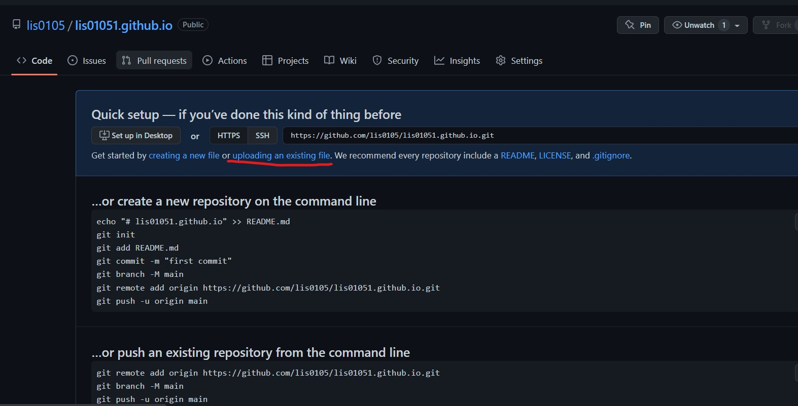

这是一篇详细的教程，教你如何利用 GitHub Pages 免费部署自己的静态网站，无需购买云服务器和域名。
1. 准备工作
- 注册 GitHub 账号。
- 登录后创建一个新的仓库，点击右上角的 New 按钮。

2. GitHub 储存库的创建

首先进入页面后，在 Repository name 的位置填写域名，格式必须是 username.github.io（username 是你的 GitHub 用户名）。
然后向下滑动，点击 Create repository 按钮。
如果创建成功，那么就可以在 GitHub 上看到你的仓库了。创建成功后会直接进入仓库界面。
点击 uploading an existing file 可以上传自己本地的网页代码。
(注：上传文件中必须有 index.html，且必须在主目录中，不能放在文件夹中)
